Esta obra de EnergyLabs Brasil, foi licenciada com uma Licença Creative Commons - Atribuição - Partilha nos Mesmos Termos 3.0 Não Adaptada.
Permissões adicionais ao âmbito desta licença podem estar disponíveis em http://www.energylabs.com.br.
Medindo Temperatura com PIC e LM35
Bom, estarei explicando aqui como medir temperatura com um PIC 16F877A e um LM35, um sensor de temperatura analógico.
Estaremos usando um PIC16F877A, um sensor de temperatura LM35 e um console serial virtual. Iniciaremos configurando o PIC no CCS C.
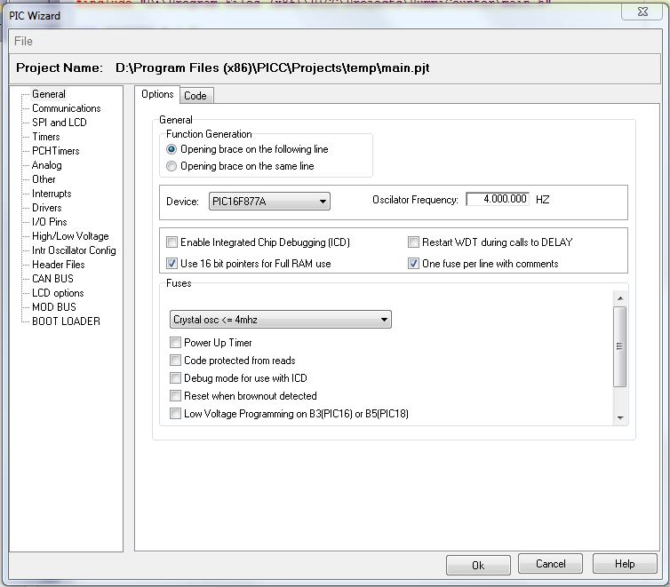
Configuramos o PIC para rodar a 4MHz e usar Ponteiros de 16Bit, isto é necessário para que possamos usar toda memoria ram disponível. Neste projeto não usaremos nada da memoria ram, mas costumo deixar ativado para usar. Próximo passo configurar o Conversor Analógico Digital do PIC:
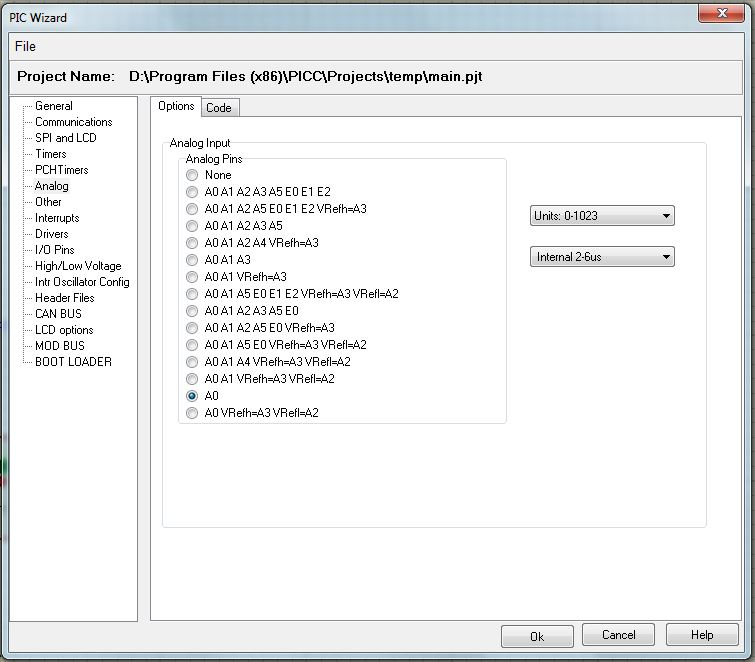
Configuramos ele para usar a porta analógica A0, para ter uma resolução de 1024 bits e para usar o clock interno do ADC. Configurado tudo, podemos clicar Ok e veremos o código do programa já.
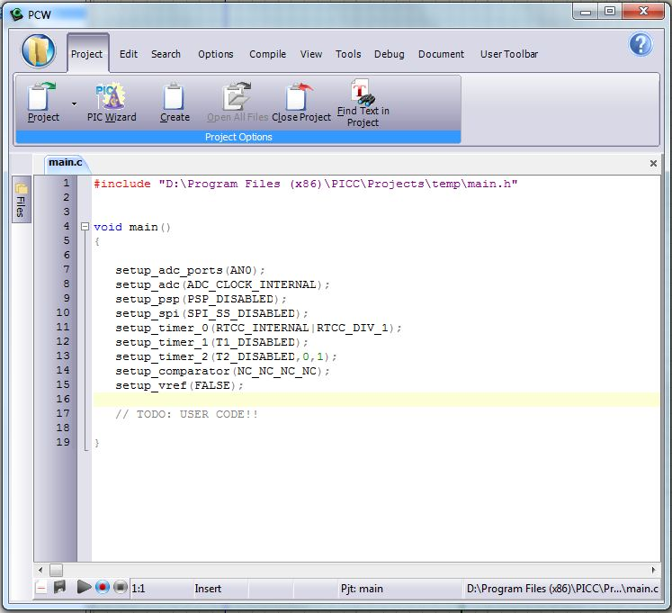
Feito isso podemos começar o circuito no simulador. Abrindo o simulador e colocando o LM35 podemos reparar na tensão que ele fornece para determinada temperatura:
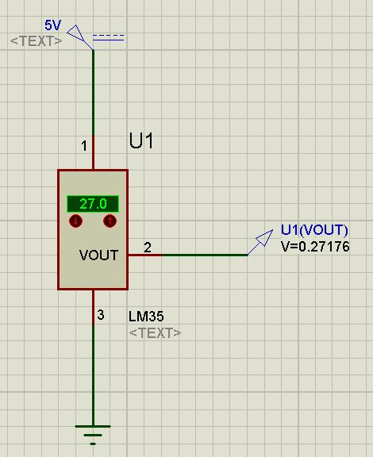
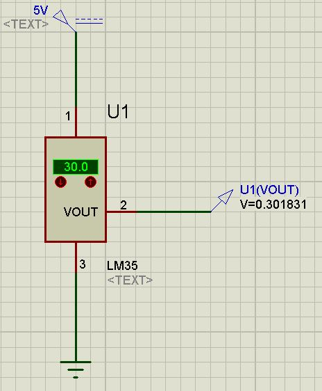
Podemos reparar, que o LM35 fornece 1mV por grau célsius. Esta informação pode ser conferida no data sheet do LM35. Teremos então de fazer o PIC contar 1ºC para cada milivolt. Adicionaremos então o PIC e o Console Virtual.
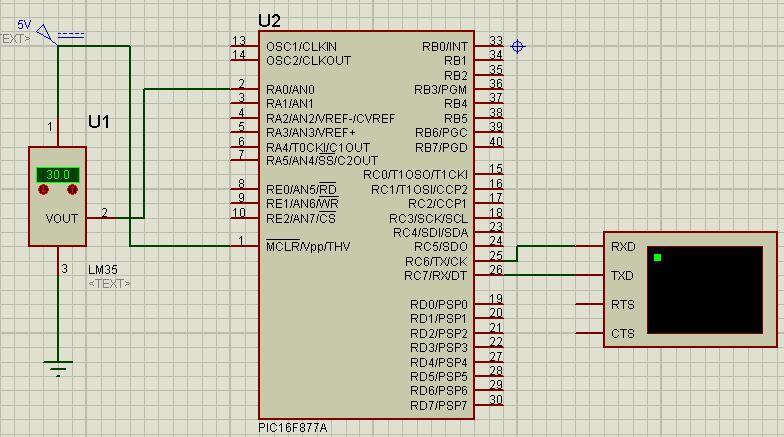
Ligaremos todo circuito conforme a figura. Não estamos considerando partes essenciais para o funcionamento real do PIC, como o cristal e a alimentação, pois isto é apenas uma simulação.
Configure o PIC16F877A para rodar a 4MHz e selecione o arquivo do programa (main.hex) que estamos usando (entre no compilador e aperte F9 para compilar o código).
Definiremos então agora as variáveis que iremos usar no programa.
Usaremos três variaveis:
tensao => Long Integer
temperatura => Long Integer
temporario => Float
Essas três variáveis serão usadas no decorrer do programa, onde tensao armazenara o valor o qual obteremos do ADC (tensão em binário), temporario iremos usar para armazenar o resultado do cálculo que faremos para descobrir a tensão em volts, e temperatura onde iremos armazenar o valor da temperatura.
Para definirmos essas variaveis, teremos de colocar o seguinte trecho de código antes da seção void main()
long int tensao,temperatura;
float temporario;
Após isso teremos de criar o loop que irá ler o valor do ADC, fazer os cálculos e mandar para o console serial. Primeiro faremos a leitura do seguinte modo:
while(true) {
SET_ADC_CHANNEL(0); // Acertar o canal do ADC para o A0
delay_ms(10); // Esperar 10ms
tensao = READ_ADC(7); // Iniciar ADC e ler o conteúdo para variável tensao
printf("Tensao %u “, tensao); // Mandar conteudo da varíavel para o console.
delay_ms(1000); // Esperar 1 segundo.
}
Compilando este programa, iremos obter o seguinte resultado:
Para 30ºC:
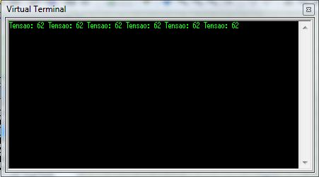
Para 35ºC:
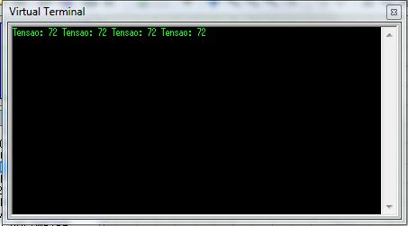
Como pudemos observar, conseguimos o valor em binário da tensão. Logo precisamos converter isso. Isto é bem simples:
Configuramos o ADC para uma resolução de 1024 bits, e a tensão do ADC é a mesma do que o PIC, logo 5V. Para sabermos quantos volts por bit o ADC lê, basta dividirmos 5 por 1024.
5 / 1024 = 0,0048828125
Ou seja, 0,0048828125 volts por bit. Numero quebrado não? Não tem problema, para isso criamos a variável temporario com tipo float. Float significa que a variável terá uma virgula e números após ela.
Bom já sabemos agora quantos Volts por Bit, e agora para sabermos a temperatura? Bem é simples. Basta dividir a tensão por 0,01 (1mV por ºC) e teremos a temperatura:
62 * 0,0048828125 = 0,302734375 / 0,01 = 30,2734375 ºC arrendondando 30ºC
72 * 0,0048828125 = 0,3515625 / 0,001 = 35,15625 ºC arredondando 35ºC
Tudo certo? Então vamos a programação! Parece complicado, mas é realmente simples, aqui vai como fica nosso trecho de código:
while(true) {
SET_ADC_CHANNEL(0); // Acertar o canal do ADC para o A0
delay_ms(10); // Esperar 10ms
tensao = READ_ADC(7); // Iniciar ADC e ler o conteúdo para variável tensao
temporario = tensao * 0.0048828125; // Calculo para descobrir quantos volts o pic mediu.
temperatura = temporario / 0.01; // Calculo para descobrir a temperatura.
printf("\fTemperatura: %Lu \n", temperatura); // Mostrar a temperatura no console.
delay_ms(1000); // Esperar 1 segundo
}
Simples não? Poderiamos simplificar e fazer tudo junto:
temperatura = tensao * 0.0048828125 / 0.01;
ou até mesmo:
temperatura = tensao * 0.48828125;
Vejamos o resultado então:
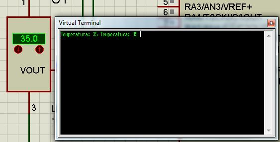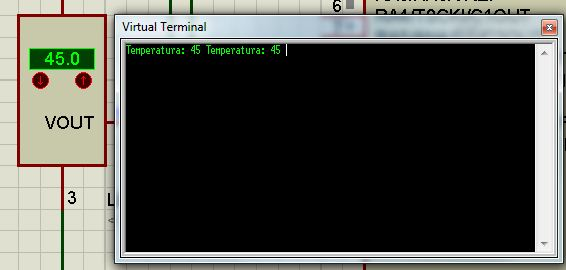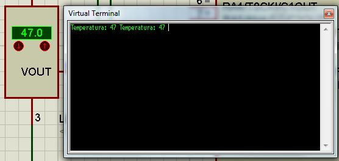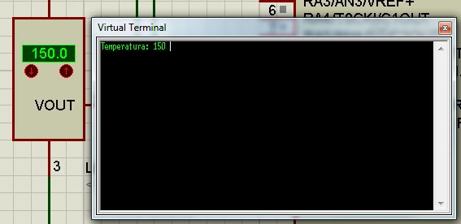
Viu como é simples? Aqui está o código completo para caso você não tenha conseguido fazer funcionar:
#include "D:\Program Files (x86)\PICC\Projects\temp\main.h"
long int tensao,temperatura;
float temporario;
void main()
{
setup_adc_ports(AN0);
setup_adc(ADC_CLOCK_INTERNAL);
setup_psp(PSP_DISABLED);
setup_spi(SPI_SS_DISABLED);
setup_timer_0(RTCC_INTERNAL|RTCC_DIV_1);
setup_timer_1(T1_DISABLED);
setup_timer_2(T2_DISABLED,0,1);
setup_comparator(NC_NC_NC_NC);
setup_vref(FALSE);
while(true) {
SET_ADC_CHANNEL(0);
delay_ms(10);
tensao = READ_ADC(7);
temporario = tensao * 0.0048828125;
temperatura = temporario / 0.01;
printf("\fTemperatura: %Lu \n", temperatura);
delay_ms(1000);
}
}
Documento por Lucas Teske
Esta obra de EnergyLabs Brasil, foi licenciada com uma Licença Creative Commons - Atribuição - Partilha nos Mesmos Termos 3.0 Não Adaptada.
Permissões adicionais ao âmbito desta licença podem estar disponíveis em http://www.energylabs.com.br.